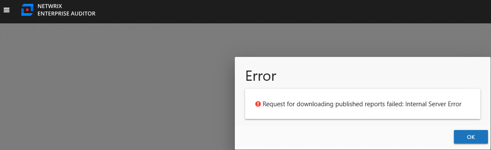
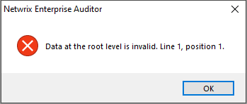
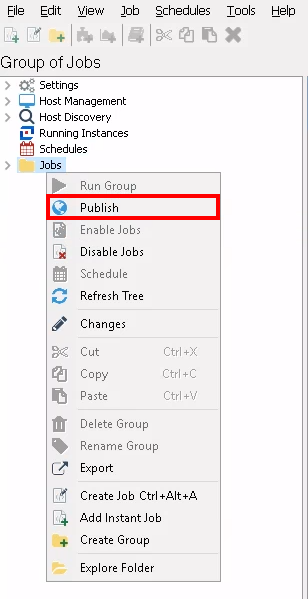
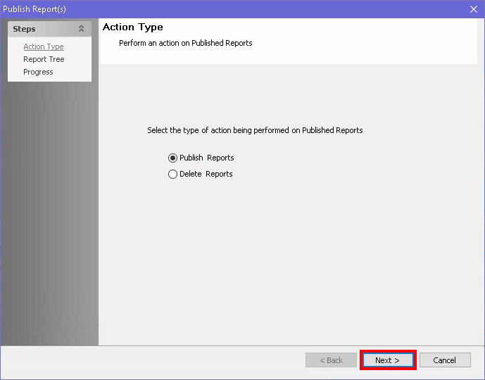
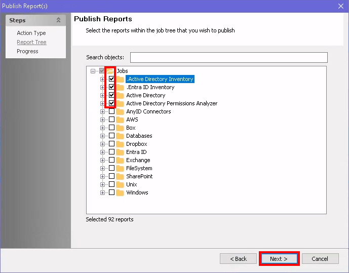
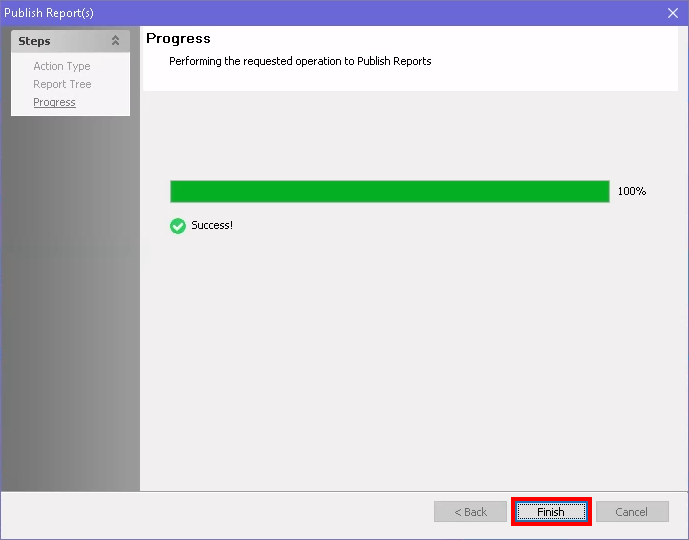

Symptoms
Either of the following symptoms is present in your environment:
-
Upon opening the Reporting web page, you receive the following error:
! Request for downloading published reports failed: Internal Server Error

-
If the file is corrupted, the following error could appear when opening the Netwrix
Access Analyzer (formerly Netwrix Enterprise Auditor) console.

-
Log entry example:
DEBUG Netwrix Enterprise Auditor IsGroupPublished "Data at the root level is invalid. Line 1, position 1."
%sainstalldir%\SADatabase\Logs\Application\SADebug-20250306124900-10776.TSV
-
Log entry example:
Cause
The issue is caused by a corrupted Reports.xml.
Resolution
To resolve these errors, follow the steps below.
-
Rebuild the Reports folder under the install path. If you want to back up the folder,
you should archive it prior to deleting the original.
NOTE: To find the install path, enter the following environmental variable into the application server's Windows File Explorer:
%sainstalldir%. Then, right-click the Reports folder to archive and/or delete it. - Close and reopen the Access Analyzer Console to rebuild the folder.
-
To publish the report(s) again, right-click a needed Job Group (e.g.,
Jobs), and select Publish to publish the reports from
the selected job group or job without regenerating the report.

-
Select Publish Reports and click Next.

-
Select objects as needed. Then, click Next to run the report.

-
Once the report has run successfully, click Finish to close out of the
Reporting web page.

NOTE: Additionally, reports will be rebuilt when the related job completes its next run.